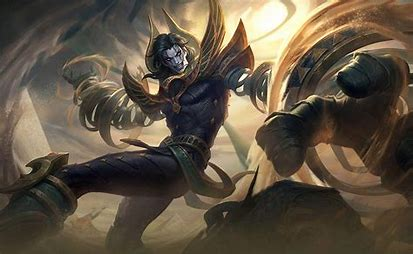
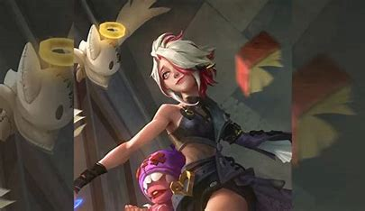
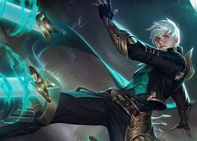
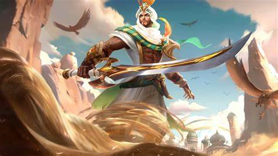

pro: pemain paling berpengalaman di supri, siapa lagi kalo bukan fico.
dengan yin-nya yang top ciracas dapat lock semua musuh dengan mudah.
cons: marah marah mulu
pro: roamer andalan supri, top global montage.
cons: kadang ngetroll
pro: bisa bunuh semua hero
cons: kadang gada dmg
pro: mid gusion siap wiped out musuh.
cons: rata rata mati 8 tiap match anying
pro: counter semua hero (katanya)
cons: defense khaleed terbilang lemah